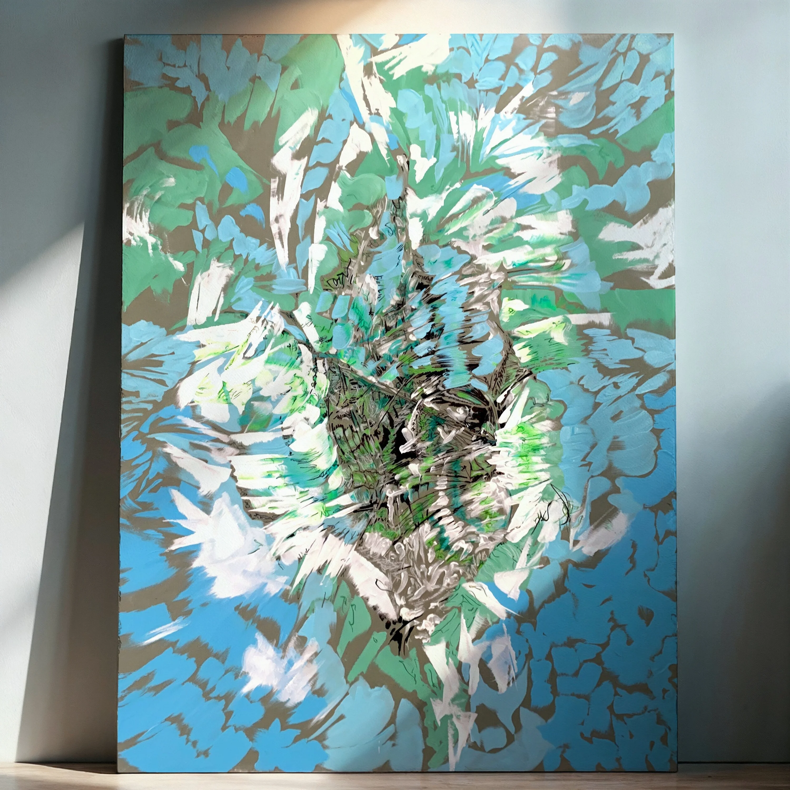
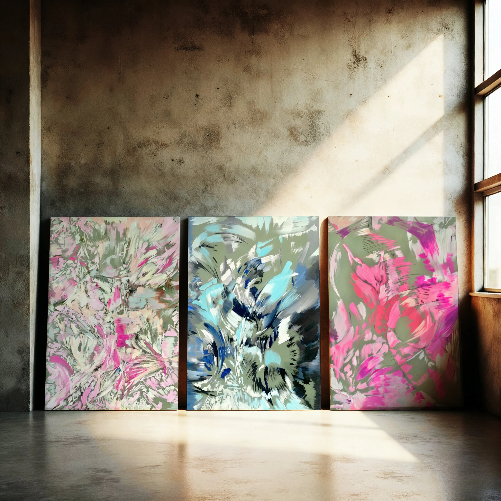
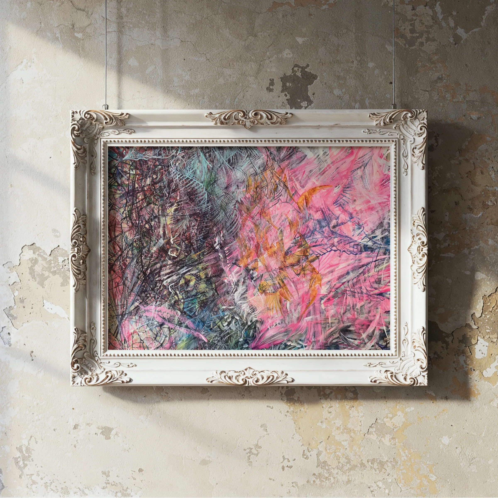
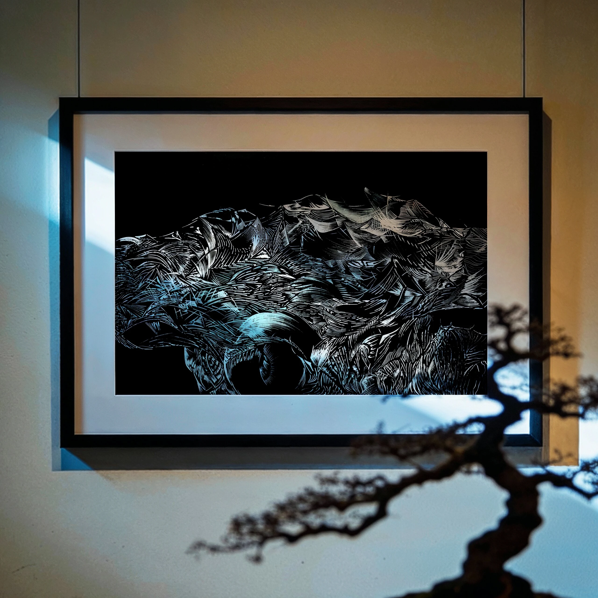
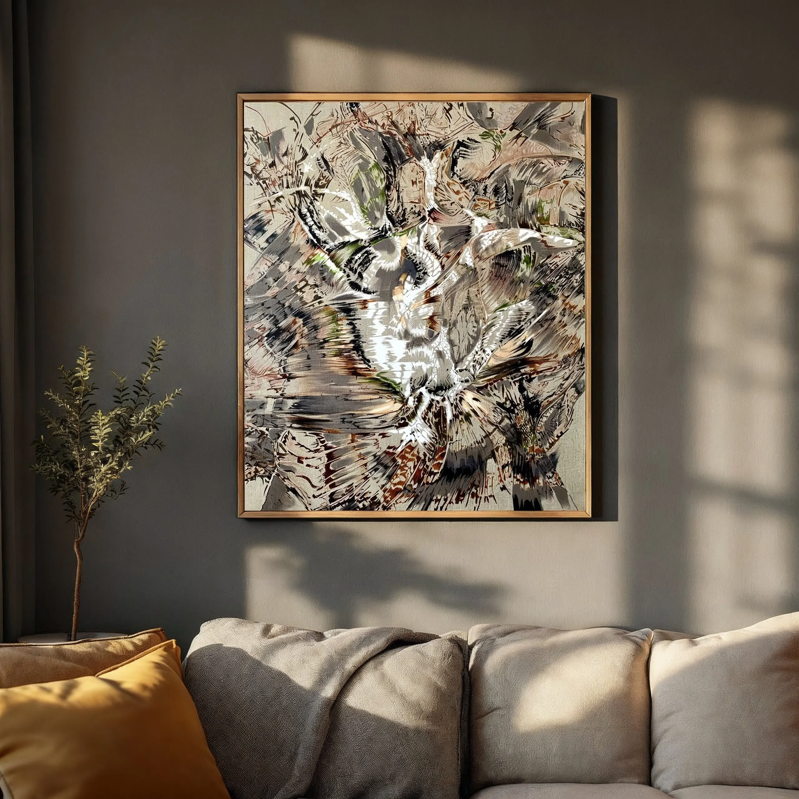
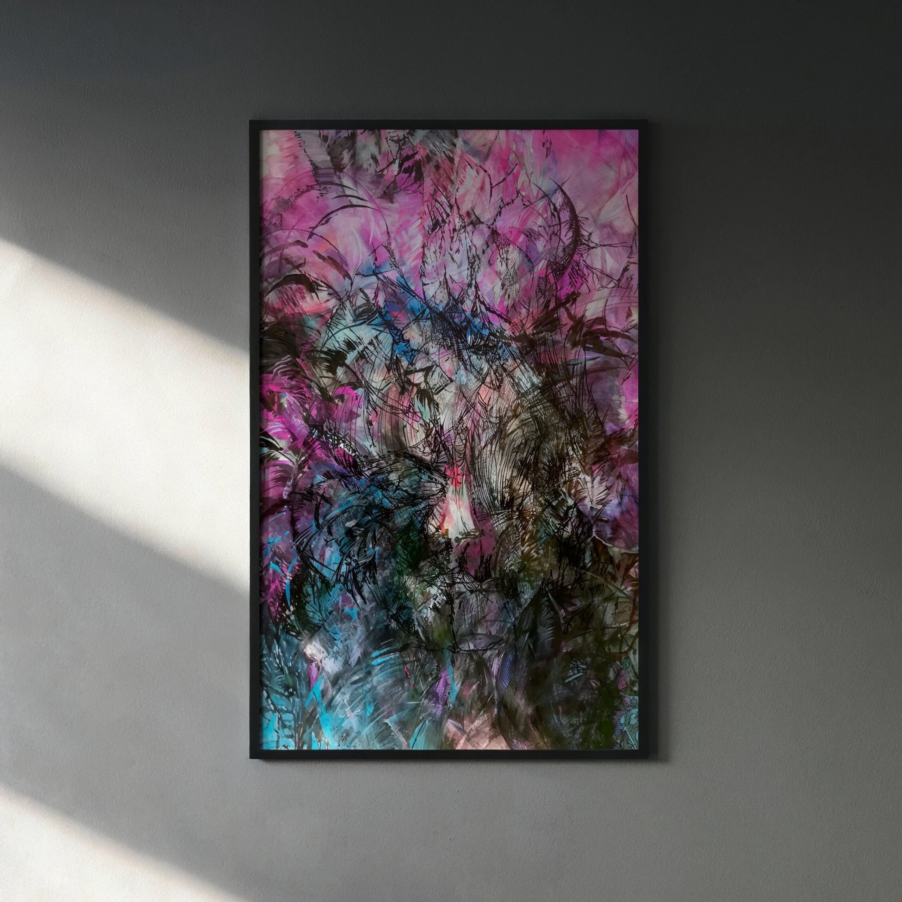
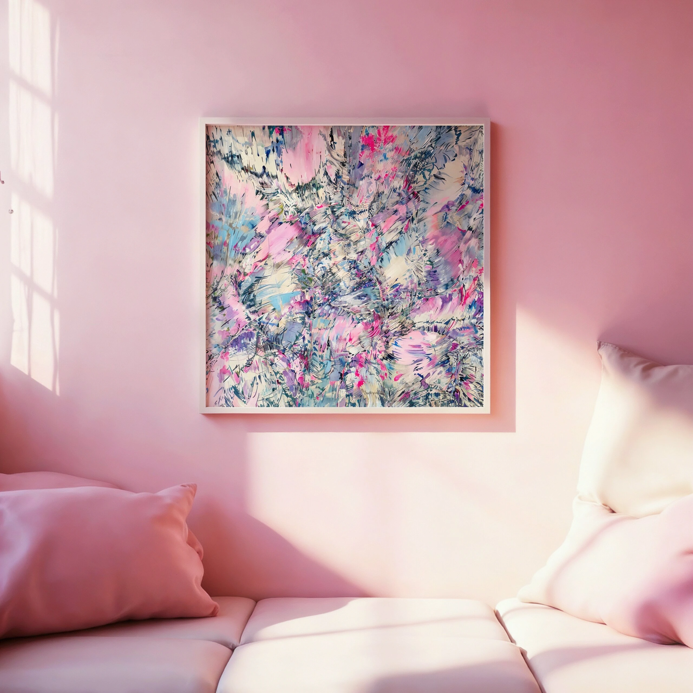
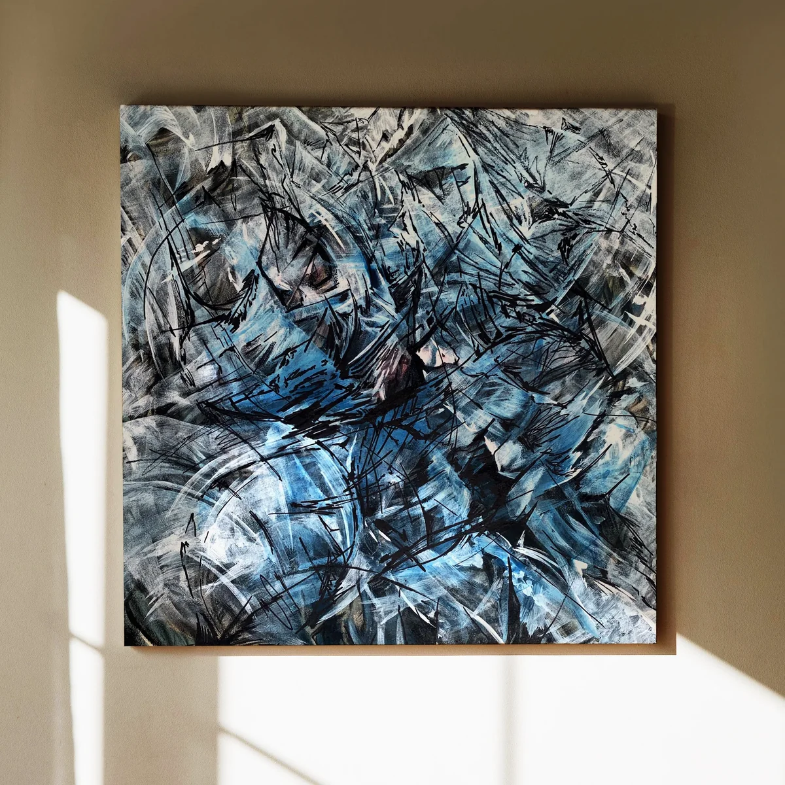

acrylic, acrylic marker, colored pencil
on plasterboard
125 x 90 x 1.5 cm

acrylic, acrylic marker, colored pencil
on plasterboard
125 x 90 x 1.5 cm

acrylic, acrylic marker, pigment liner, fineliner, brush pen, colored pencil
on cardboard
70 x 100 cm

acrylic marker
on black cardboard
42 x 59 cm

acrylic, acrylic marker, brush pen
on cardboard
70 x 100 cm
acrylic, acrylic marker, brush pen
on linen canvas
100 x 80 x 4.5 cm

acrylic, acrylic marker, pigment liner
on cardboard
100 x 62 cm

acrylic, acrylic marker, brush pen
on cotton canvas
100 x 100 x 3.8 cm

acrylic, acrylic marker, brush pen
on plasterboard
48 × 48 × 1.5 cm
